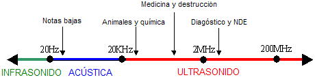

1. Ultrasonido¶
El ultrasonido son ondas mecánicas, que requieren un material para propagarse, cuya frecuencia está por encima de la capacidad de audición del oído humano (aproximadamente 20 000 Hz).

Algunas especies como ciertos insectos y mamíferos (los delfines y los murciélagos) lo utilizan de forma parecida a un radar para su orientación; a este fenómeno se lo conoce como ecolocalización. Se sabe que las ondas emitidas por estos animales son tan altas que “rebotan” fácilmente en todos los objetos alrededor de ellos, permitiéndoles crear una “imagen” de lo que está a su alrededor para poder orientarse fácilmente.